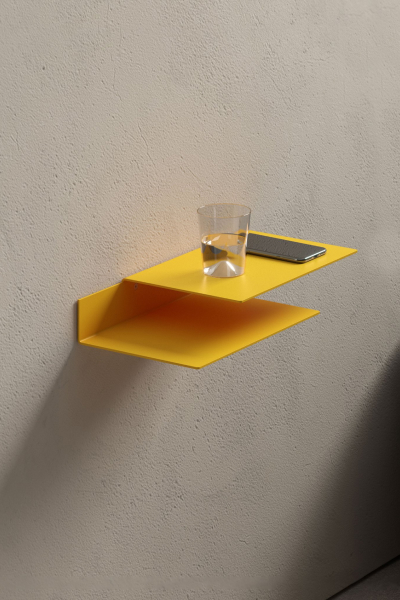

Первая стунень — это прямое ознакомление. Пришелец знакомит нас непосредственно с
самого начала, но если мы не можем провести прямое ознакомление на высоком уровне в стиле Пространства,
то мы знакомим с помощью йоги Ати. Так мы можем понять суть практики Пространства и в каком
направлении нам следует двигаться. Итак, по этой причине сначала у нас идёт ознакомление. Нет
необходимости в ретуалах, тренировке чего бы то ни было, но мы должны сделать прямое
ознакомление.
Вторая ступень — не оставаться в сомнении. Даже если мы получили что-то
формальное, например, внутреннее учение Пространства, иногда мы знаем: «Теперь я обнаружил, что моя
настоящая природа — это Осознавание», но очень сложно быть уверенными на сто процентов, поэтому мы
остаёмся в сомнениях. Если вы сомневаетесь по поводу любой практики, то она не работает. То же
самое верно и для такой практики, как учение Пространства.

Третья ступень гласит, что вы не остаётесь в сомнениях, вы обнаружили
свою настоящую природу, у вас есть автоматическая уверенность в этом знании, и вы объединяете с
ним аспекты тела, речи и ума — вообще всё. Итак, в этом случае объяснения развиваются одно за
другим, и это называется нангва чжи, что означает «четыре видения». Когда мы достигаем четвёртого
уровня и, например, умираем, то реализуем радужное тело, при этом физического тела не остаётся,
оно исчезает. Если мы не только достигаем четвёртого уровня, но и завершаем его, это значит, мы
совершили великий перенос. Великий перенос означает, что не проявляется смерть. Если кто-то совершает
великий перенос, обычные люди не могут его видеть, потому что наше физическое тело обладает двойственным
видением.